O que é BPMN
BPMN (Business Process Model and Notation) é uma linguagem gráfica padronizada para descrever processos de negócio: quem faz o quê, em que ordem, com quais decisões e o que acontece quando algo sai do previsto.
A própria norma define o objetivo: ser compreensível por todos os envolvidos, dos analistas que fazem o primeiro rascunho aos desenvolvedores que implementam e às pessoas que gerenciam o processo. Ela chama isso de ponte entre o desenho e a implementação. [1]
Você não precisa conhecer todos os símbolos para começar. Eventos, tarefas, gateways e fluxos de sequência já resolvem boa parte dos diagramas. Este tutorial vai nessa ordem e usa o BPMN Simulator, um app em um único arquivo HTML: nada é enviado para a rede, e os diagramas ficam no seu navegador.
↑ Voltar ao topoUma breve história
O BPMN nasceu da necessidade de uma notação comum entre analistas e tecnologia. A linha do tempo abaixo traz os marcos, com as datas das fontes consultadas.

- 2004. A Business Process Management Initiative (BPMI.org) anuncia o BPMN 1.0, então chamado Business Process Modeling Notation. Stephen White, da IBM, presidia o grupo de trabalho. Pelo menos 20 empresas se comprometeram a dar suporte à notação. [3]
- 2005. A BPMI se funde à Object Management Group (OMG), que passa a manter a norma. [5][6]
- 2007 a 2009. A OMG registra a versão 1.0 formal em março de 2007, a 1.1 em janeiro de 2008 e a 1.2 em janeiro de 2009. [2][1]
- 2010. O BPMN 2.0 acrescenta semântica de execução e um formato de intercâmbio com diagrama. O nome muda para Model and Notation, mantendo a sigla. [4][5]
- 2013. A norma é publicada também como ISO/IEC 19510. [7]
- 2014. A versão 2.0.2, com publicação em janeiro, é a atual na OMG. A única mudança declarada em relação à anterior está na cláusula 15. [1]
As fontes nem sempre concordam nos detalhes, e as divergências estão anotadas nas referências. O app segue a versão 2.0.2.
↑ Voltar ao topoDefinições essenciais
| Termo | O que significa |
|---|---|
| Processo | Sequência de atividades para atingir um resultado, como pagar um reembolso. |
| Instância (caso) | Uma execução do processo. Se 30 pedidos entram hoje, são 30 instâncias. |
| Ficha (token) | Marcador imaginário que percorre o diagrama e mostra onde a execução está. A norma o chama de conceito teórico. [1] |
| Atividade | Trabalho feito por pessoa ou sistema. Pode ser tarefa (atômica) ou subprocesso (com etapas internas). |
| Evento | Algo que acontece: um pedido chega, um prazo vence, ocorre um erro. |
| Gateway | Ponto em que o fluxo se divide ou se une. Ele não faz trabalho nem decide por conta própria: aplica uma regra. |
| Fluxo de sequência | Seta contínua: a ordem dentro de um mesmo processo. |
| Fluxo de mensagem | Seta tracejada: comunicação entre participantes diferentes. |
| Pool | Um participante do processo, como uma empresa ou um cliente. |
| Raia | Divisão de um pool, geralmente por papel ou setor. |
| Colaboração | Diagrama com dois ou mais pools que trocam mensagens. |
| Caixa-preta | Pool sem processo visível: sabemos que existe, não como trabalha. |
| Evento de borda | Evento preso a uma atividade, para o que pode ocorrer enquanto ela roda. |
| Compensação | Desfazer o que já foi concluído, como cancelar um voo reservado. |
| Conformidade | Níveis que a norma define para ferramentas. O app segue as subclasses Descritiva e Analítica. [1] |
Os elementos da notação
Quase todo diagrama usa quatro famílias de elementos. A forma indica a família, e o ícone interno indica o tipo.

Eventos
A borda indica a posição: fina no início, dupla no meio e grossa no fim. O ícone indica o gatilho ou o resultado. Ícone vazado captura algo, e preenchido dispara. O app só oferece as combinações permitidas pela Tabela 10.93 da norma. [1]

Atividades
A tarefa é a unidade de trabalho, e o ícone no canto informa o tipo: usuário, serviço, manual, envio, recebimento, script ou regra de negócio. O + embaixo indica um subprocesso recolhido. Três barras indicam múltiplas instâncias, e a seta circular indica repetição.
Gateways
O símbolo dentro do losango muda completamente o comportamento. Sempre pergunte: quantas fichas saem e quantas a junção espera?

Como a ficha anda
A execução fica fácil de entender quando você acompanha uma ficha. O evento de início cria a ficha. Ela segue pelas setas, fica na atividade enquanto o trabalho dura e, no gateway, obedece à regra daquele tipo. O evento de fim a consome, e a instância termina quando não restam fichas nem atividades em andamento. [1]
Daí vem o erro mais comum de iniciantes: abrir caminhos com um tipo de gateway e fechar com outro.

O contrário também atrapalha: se um paralelo abre e um exclusivo fecha, cada ficha passa sozinha e o que vem depois roda duas vezes. A norma também trata o caso de uma condição não valer: em um gateway exclusivo sem condição verdadeira e sem fluxo padrão, ocorre uma exceção (Tabela 13.2). [1]
↑ Voltar ao topoA tela do app

Selecione um elemento para ver as ações ao lado dele: acrescentar o próximo passo, conectar ou excluir. Com duplo clique ou F2 você escreve o nome. O próprio app escolhe o tipo de conexão conforme a norma e recusa, mostrando o motivo, as ligações proibidas, como um fluxo de sequência saindo de um evento de fim.
No menu Arquivo há cinco exemplos prontos, para explorar antes de desenhar. Admissão de funcionário mostra subprocessos, e Central de atendimento mostra filas.
↑ Voltar ao topoSeu primeiro processo
Vamos desenhar uma versão curta deste reembolso. Faça cada passo no app, sem pressa:

- Abra o BPMN Simulator e arraste um Evento de início para a área de desenho. Com duplo clique, escreva Despesa enviada.
- Com o evento selecionado, clique em Acrescentar tarefa no painel ao lado dele e escreva Conferir comprovante.
- Com a tarefa selecionada, clique em Acrescentar gateway e chame-o de Comprovante válido?. Nome de gateway de decisão funciona bem como pergunta.
- A partir do gateway, acrescente a tarefa Pagar reembolso e, depois dela, um evento de fim Reembolso pago.
- Selecione de novo o gateway e acrescente outro evento de fim: Pedido recusado.
- Clique na seta que vai para Pagar reembolso. Em Propriedades, escreva o nome Sim e a Condição
comprovante_ok. - Clique na outra seta, escreva o nome Não e marque É o fluxo padrão. Uma barrinha aparece na origem da seta.
- Clique na área vazia e, em Dados iniciais, escreva
comprovante_ok = chance(0.9). Em cada caso, há 90% de chance de o comprovante valer. - Abra a aba Verificar. Não deve haver erros de norma. Se houver, clique no item para ir até o elemento.
Para salvar, use Arquivo → Salvar .bpmn. O arquivo segue o formato BPMN 2.0 XML da norma, e outras ferramentas compatíveis podem abri-lo.
↑ Voltar ao topoSimular
Clique em Simular. O relógio é virtual, em minutos, e a mesma Semente repete a mesma execução. Há quatro formas de usar:
| Opção | Para quê |
|---|---|
| Executar | Ver as fichas animadas, do início ao fim. |
| Passo a passo | Avançar uma ficha por clique, lendo o que aconteceu, a regra da norma e o que vem depois. |
| Decidir eu mesmo | Escolher o caminho em cada gateway. |
| Muitas execuções | Rodar muitos casos e ver tempos, filas e gargalos. |
Para quem está aprendendo, o Passo a passo é o melhor começo. Durações e efeitos ficam em cada atividade (random(5, 15), exponential(10), normal(10, 2)). Probabilidades ficam nos fluxos, e a capacidade fica em cada raia.
Um experimento com filas
Abra o exemplo Central de atendimento, com 2 atendentes e 1 especialista. Na aba Muitas execuções, rode 500 casos com uma chegada a cada 3 minutos em média. A tabela mostra o tempo de ciclo médio em 20 sementes, com a margem de 95%:
| Atendentes | Especialistas | Tempo de ciclo (min) | Ocupação dos atendentes | Ocupação dos especialistas |
|---|---|---|---|---|
| 2 | 1 | 280 ± 24 | 96% | 93% |
| 2 | 2 | 247 ± 22 | 100% | 48% |
| 3 | 1 | 74 ± 15 | 68% | 96% |
| 3 | 2 | 19 ± 1 | 82% | 57% |
As duas raias começam muito ocupadas, mas dobrar os especialistas muda pouco: as margens se sobrepõem. Um atendente a mais faz o tempo cair muito, porque todo chamado passa por eles. Só com os dois reforços o tempo fica perto do trabalho em si. Isso é só um modelo, com números inventados para o exemplo: serve para comparar hipóteses, não para medir o processo real.
↑ Voltar ao topoCenários de teste
Simular mostra o que acontece. Testar confere se é o que deveria acontecer. Na aba Cenários de teste, cada cenário define entradas e resultado esperado, e o app dá o veredito.

O exemplo Pedido online já traz três cenários. Clique em Rodar todos e abra os detalhes. Depois experimente:
- Sugerir cenários: cria um cenário por caminho que acrescenta cobertura. Ele força as decisões e preenche o esperado com o que aconteceu, então revise se aquilo é mesmo o certo.
- Cobertura: o que nunca executou fica tracejado no diagrama. Cobertura de 100% não prova que o processo está correto: só diz que cada elemento rodou ao menos uma vez.
- Repetições: roda com várias sementes e aponta a que falhou, para modelos com sorteios.
- Salvar execução como cenário: guarda uma execução manual terminada, para repetir depois.
Verificar o modelo
A aba Verificar confere o modelo em dois níveis:
- Regras da norma: eventos permitidos em cada posição, conexões das Tabelas 7.3 e 7.4, fluxo padrão com condição e outras. Clicar no item leva ao elemento. [1]
- Análise de fichas: o botão Analisar percorre os estados possíveis de cada escopo e aponta impasses, laços sem saída, falta de sincronização e o que nunca executa. Ela supõe que qualquer caminho é possível, ignorando os dados. Por isso, pode acusar um caminho que seus dados nunca percorrem.
A importação do app foi conferida com 12 arquivos da suíte de intercâmbio do grupo MIWG, e os arquivos reexportados passaram no esquema XSD oficial. [8] Isso não é certificação: o app não é certificado pela OMG e não é um motor de produção. Diagramas de conversa e de coreografia ficam de fora. Os limites completos estão na Ajuda do app.
↑ Voltar ao topoPrompts de IA
Uma IA ajuda a sair da página em branco, a achar lacunas e a escrever cenários. Ela também erra com segurança: inventa regras, esquece exceções e pode gerar XML inválido. Trate a saída como rascunho de um colega apressado. Para escrever prompts melhores, veja o tutorial de prompts.

Antes de colar: processos internos podem conter nomes, valores e regras sigilosas. Troque por dados fictícios e siga a política da sua organização para uso de IA. O app não envia nada para a rede, mas o serviço de IA recebe o que você colar nele.
Troque os trechos entre colchetes e cole na ferramenta de IA que você usa.
1. Entrevistar antes de desenhar
Faz a IA descobrir o que falta, em vez de supor. É o melhor começo quando o processo ainda está na cabeça das pessoas.
Você é um analista de processos experiente em BPMN 2.0.2.
Quero modelar este processo: [descreva em poucas frases].
Antes de propor qualquer diagrama, me entreviste:
- Faça uma pergunta por vez e espere minha resposta.
- Cubra: o que inicia o processo, quem participa, as etapas, as decisões e seus critérios, as exceções, os prazos, as esperas, os sistemas e o que indica o fim.
- Pergunte principalmente sobre o que dá errado, não só sobre o caminho feliz.
- Não invente respostas. Se eu não souber, registre como pendência.
Ao final, entregue: resumo do processo, tabela de atividades (atividade, responsável, entrada, saída), lista de decisões com critérios e lista de pendências.2. Transformar um texto em estrutura
Para atas, procedimentos ou transcrições. Pede a origem de cada item, o que facilita conferir.
A partir do texto abaixo, extraia a estrutura de um processo para BPMN.
Regras:
- Use só o que está no texto. Para cada item, cite o trecho de origem.
- Marque como [SUPOSIÇÃO] tudo que você deduziu.
- Liste as contradições e o que falta saber.
Entregue: participantes, atividades em ordem, decisões (pergunta, opções, critério), eventos (o que inicia, termina, interrompe ou espera) e pendências.
Texto:
"""
[cole aqui, sem dados sensíveis]
"""3. Gerar o BPMN para o BPMN Simulator
Gera um arquivo que o app abre, arruma e simula. Cole a resposta em Arquivo → Ver ou colar XML e clique em Aplicar XML. Depois vá a Verificar.
Gere um documento BPMN 2.0 XML, válido no esquema da OMG, para este processo:
[descreva o processo ou cole a estrutura].
Formato obrigatório:
- Raiz <definitions> com targetNamespace e estes namespaces:
xmlns="http://www.omg.org/spec/BPMN/20100524/MODEL"
xmlns:xsi="http://www.w3.org/2001/XMLSchema-instance"
xmlns:sim="https://giovanipm.github.io/ns/bpmn-simulator"
- Um <process> com isExecutable="false". Se houver mais de um participante, use <collaboration> com <participant> e <messageFlow>, com um processo para cada participante.
- Não gere <bpmndi:BPMNDiagram>: o app arruma o desenho.
- IDs únicos e legíveis. Cada nó com <incoming> e <outgoing>, nessa ordem, antes das definições de evento.
- Em todo gateway exclusivo que decide, um fluxo padrão com o atributo default, e condições nos outros fluxos com <conditionExpression xsi:type="tFormalExpression">.
- Feche caminhos paralelos com gateway paralelo. Não use evento intermediário de captura sem definição de evento.
Para a simulação, use extensionElements, antes de <incoming>:
- No processo: <sim:config init="campo = expressão"/>, com entre as linhas.
- Nas atividades: <sim:config duration="random(5, 15)"/>, em minutos.
- Nas condições, use campos e os operadores: > >= < <= == != and or not.
- Funções disponíveis: random(a, b), exponential(m), normal(m, d), chance(p), round(x, d).
Responda só com o XML. No fim, dentro de um comentário XML, liste as suposições que você fez.4. Revisar um modelo
Copie o XML em Ver ou colar XML. A IA olha o sentido do processo, que as regras automáticas não enxergam.
Revise este processo BPMN como um analista experiente.
Confira, nesta ordem:
1. Sentido de negócio: etapas ausentes, responsáveis estranhos, exceções sem tratamento.
2. Fluxo: impasses, caminhos sem fim, gateways que abrem de um tipo e fecham de outro.
3. Clareza: nomes de atividade com verbo e objeto, decisões em forma de pergunta.
4. Norma BPMN 2.0.2: conexões proibidas e eventos fora de posição.
Para cada problema, informe: id do elemento, problema, por que importa, correção sugerida e gravidade (alta, média, baixa). Separe o que é certeza do que é suspeita. Não invente regras do negócio: se depender delas, faça uma pergunta.
XML:
"""
[cole aqui]
"""5. Explicar o processo em linguagem simples
Bom para validar com quem faz o trabalho e não lê BPMN.
Explique o processo abaixo para [público, como: equipe de atendimento], sem termos de BPMN.
Entregue:
- Em duas frases: para que serve e quando começa.
- O passo a passo, indicando quem faz o quê.
- Cada decisão, como pergunta, e o que acontece em cada resposta.
- O que acontece quando algo dá errado ou atrasa.
- Cinco perguntas para eu confirmar com a equipe se o desenho corresponde ao trabalho real.
Descreva só o que está no modelo. Se algo estiver ambíguo, diga isso.
XML:
"""
[cole aqui]
"""6. Propor cenários de teste
A tabela resultante vira cenários na aba Cenários de teste. Use os ids reais do modelo.
Proponha cenários de teste para o processo BPMN abaixo.
Cubra: caminho principal, cada saída de cada decisão, valores no limite das condições, eventos de borda ocorrendo e não ocorrendo, e combinações que parecem arriscadas.
Para cada cenário, uma linha de tabela com:
- Nome
- Dado que: dados do caso, no formato campo = valor
- Quando: decisões forçadas e eventos que ocorrem ou não
- Então: elementos por onde passa e por onde não passa (com o id), e como o caso termina
- Por que este cenário importa
Marque com [REVISAR] os resultados esperados que dependem de uma regra de negócio não escrita no modelo. Prefira poucos cenários que revelem erros a muitos parecidos.
XML:
"""
[cole aqui]
"""7. Estimar parâmetros de simulação
Sem dados reais, qualquer número é hipótese. Este prompt pede para deixar isso visível.
Quero simular este processo BPMN e preciso de durações, probabilidades e capacidades.
Dados reais que tenho: [cole médias, volumes ou escreva "nenhum"].
Para cada atividade e decisão, proponha:
- Valor em minutos, em uma destas formas: número, random(a, b), exponential(m) ou normal(m, d). Justifique a escolha.
- Origem: [DADO], se veio do que informei, ou [HIPÓTESE], se é estimativa.
- Como obter o dado real.
Depois, liste as três hipóteses que mais podem mudar o resultado, para eu testá-las primeiro.
XML:
"""
[cole aqui]
"""8. Interpretar os resultados
Cole os números da aba Muitas execuções para discutir hipóteses, e não para obter um veredito.
Estes são os resultados de uma simulação de um processo BPMN. Os números vêm de um modelo com parâmetros estimados, não do processo real.
Processo: [descrição curta]
Parâmetros: [capacidades, durações e chegadas]
Resultados: [tempo de ciclo, ocupação por raia, filas por atividade]
Faça o seguinte:
1. Aponte o provável gargalo, usando os números.
2. Sugira no máximo três mudanças para testar, mudando uma coisa de cada vez, com o que você espera que aconteça.
3. Diga o que os dados não permitem concluir.
4. Indique o que medir no processo real antes de decidir.
Não recomende investimento com base só nessa simulação.O que foi testado nestes prompts
O formato pedido no prompt 3 foi testado de fato: um XML nesse formato, escrito pelo Claude para um processo de reembolso, passou no esquema XSD da OMG, abriu no app, foi arrumado automaticamente e simulou até o fim. Os prompts não foram testados em outros modelos de IA, e as respostas mudam a cada vez. Por isso, a conferência em Verificar e nos cenários continua necessária.
↑ Voltar ao topoBoas práticas e erros comuns
| Evite | Prefira |
|---|---|
| Nome vago: "Processar" | Verbo e objeto: "Conferir comprovante" |
| Gateway sem nome | Uma pergunta: "Comprovante válido?" |
| Abrir com X e fechar com + | Fechar com o mesmo tipo que abriu |
| Decisão dentro de uma tarefa | Tarefa para decidir e gateway para desviar |
| Fluxo de sequência entre pools | Fluxo de mensagem entre participantes |
| Só o caminho feliz | Prazos e erros com eventos de borda |
| Diagrama enorme | Subprocessos para esconder o detalhe |
| Excesso de símbolos raros | Os elementos que seu leitor conhece |
| Confiar na simulação como medida | Usá-la para comparar hipóteses |
| Aceitar o diagrama da IA sem conferir | Verificar, testar e validar com quem faz o trabalho |
Revisão rápida
Tente responder antes de abrir.
1. Um processo recebeu 30 pedidos hoje. Quantas instâncias existem?
Trinta: cada pedido é uma execução do mesmo processo.
2. Qual a diferença entre fluxo de sequência e fluxo de mensagem?
O de sequência dá a ordem dentro de um processo. O de mensagem é a comunicação entre participantes diferentes.
3. Um gateway exclusivo abre dois caminhos e um paralelo os fecha. O que acontece?
Impasse: só uma ficha chega, e a junção paralela espera duas.
4. Um gateway exclusivo não tem condição verdadeira nem fluxo padrão. E agora?
A norma prevê uma exceção. No app, o caso termina com erro e o log explica o motivo.
5. Uma borda tracejada em evento de borda significa o quê?
Que ele não interrompe: a atividade continua e uma nova ficha sai pelo evento.
6. Os cenários deram 100% de cobertura. O processo está correto?
Não necessariamente. Cada elemento rodou ao menos uma vez, mas nem todas as combinações foram testadas, e o esperado pode estar errado.
7. A IA gerou um diagrama sem erros na aba Verificar. Posso publicar?
Ainda não. A aba confere a forma, não o sentido. Faltam os testes e a validação com quem conhece o trabalho.
Referências
- Object Management Group. Business Process Model and Notation, versão 2.0.2 (formal/13-12-09). Fonte das definições, tabelas e regras citadas, além das datas das versões 1.1, 1.2 e 2.0.2.
- Object Management Group. BPMN 1.0: publicação formal em março de 2007, com copyright da BPMI.org de 2004.
- BPMI.org. Comunicado de lançamento do BPMN 1.0, de 4 de maio de 2004. O cabeçalho traz 2004, e a linha da cidade traz 2003, um erro de digitação do original.
- Object Management Group. BPMN 2.0: a OMG data de dezembro de 2010. A Wikipédia [5] cita janeiro de 2011.
- Wikipédia. Business Process Model and Notation. Fonte da fusão em 2005 e da mudança de nome na versão 2.0. As páginas atuais da OMG usam o nome novo também para a versão 1.0.
- Trisotech. BPMN Introduction and History. Fonte secundária, de um fabricante, para o mês da fusão (junho de 2005).
- ISO e IEC. ISO/IEC 19510:2013; registro na IEC. Publicada em julho de 2013. As fontes divergem sobre a correspondência: a ISO indica a versão 2.0.1 da OMG, e a Trisotech [6], a 2.0.2.
- BPMN Model Interchange Working Group. Suíte de testes de intercâmbio, usada para conferir a importação do app.